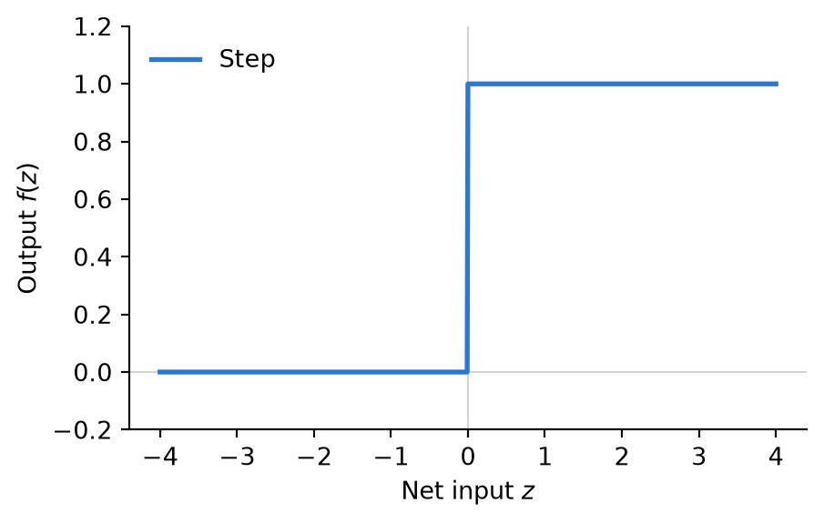
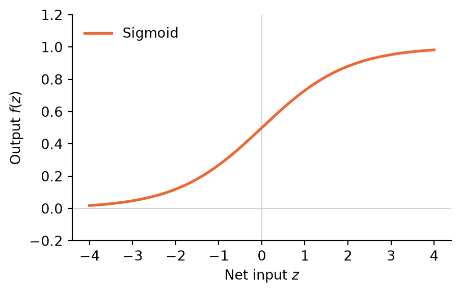
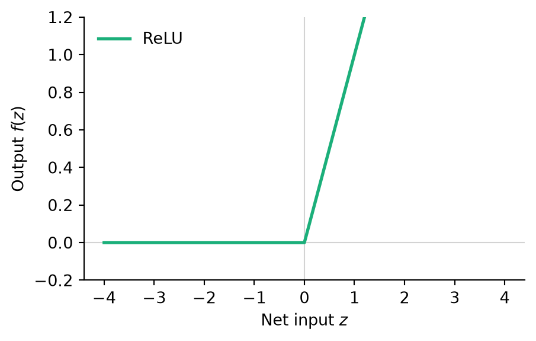
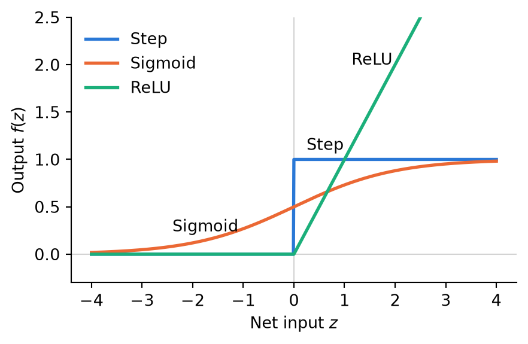

44 AI: Neurons
The AI you use for this course is a neural network. So is the software that finds faces in the photos on your phone, turns speech into text, and predicts the three-dimensional structure of a protein from its amino-acid sequence. It would make sense to think that tasks so different would each require similarly different highly advanced algorithms, but they are all built from one very simple part, repeated many times.
The idea is borrowed from biology, where simple neurons combined in (very) large numbers are able to do complex and diverse computations. A neuron receives signals from other neurons through synapses. Some synapses are excitatory and push the membrane potential up, others are inhibitory and push it down. Some synapses are stronger than others, making larger contributions to the potential. The neuron cell body adds up what comes in, and if the membrane potential reaches a threshold, the neuron fires an action potential down its axon that connects it too another neuron. If the threshold is not reached, it sends nothing. With neurons, the response is all or nothing.
All the complicated chemistry aside, a neuron basically does three things: it weights each incoming signal by the strength of its synapse, it adds the weighted signals up, and it fires if the sum reaches a threshold. The idea of turning this into math dates back to 1943. The simplified mathematical version of a biological neuron is called a perceptron, coined by Rosenblatt who built the first working neural network in 1958. Modern neural networks do not try to imitate the brain. They get their unimaginable power from combining simple perceptrons. This chapter introduces how the logic of a single perceptron can be made to represent complicated decisions. Combining them into neural networks and the capabilities this introduces is covered in the next chapters.
The perceptron
A perceptron is more commonly called a neuron, so we will use that name here as well.
There is a festival this weekend and you need to decide if are going or not1. Three things matter to your decision:
- Is the weather good?
- Do you have company?
- Can get there by public transport?
You treat weather, company, and accessibility as separate input: \(x_1\), \(x_2\) and \(x_3\). For now, 1 means yes and 0 means no. The three input do not matter equally to you. Perhaps you mind rain much more than going alone. This is why each input gets a weight, \(w_1\), \(w_2\) and \(w_3\). If \(w_1\) is larger than \(w_2\), it means the weather is more important than company. The perceptron multiplies each input by its weight and adds the results into a weighted sum
\(w_1x_1 + w_2x_2 + w_3x_3\).
The sum is compared to a threshold, \(\theta\). If the weighted sum reaches the threshold, the neuron’s output is 1 (you go to the festival). Otherwise it is 0 (you stay home).
Here is the festival neuron. The sliders on the left set the three inputs, the sliders on the connections set the weights, and the slider above the neuron sets the threshold. Turn the inputs on and off, and check each result against the resulting sums. For fine control of sliders, click them and use the arrow keys.
Say the weights are \(w_1 = 4\) for the weather, \(w_2 = 3\) for company and \(w_3 = 1\) for transport, and the threshold is \(\theta = 4.5\). Good weather on its own gives a sum of 4, which falls short, so you stay at home. Good weather and a train gives \(4 + 1 = 5\), and you go. Company and a train gives \(3 + 1 = 4\), and you stay at home. The threshold sets how much evidence the neuron needs before it fires. In this case, it is how much convincing you need to go to the festival. If you lower the threshold to \(\theta = 3.5\), good weather alone is enough, and so is company with a train.
If a weight is negative, the input counts against the decision: if \(w_2 = -3\) it means you would rather go alone. In that case an input of 1 takes 3 off the sum. A very large negative weight works as a veto, because no combination of the other inputs can make up for it.
You will often see the threshold moved to the other side of the comparison. Asking whether \(w_1x_1 + w_2x_2 + w_3x_3 \geq \theta\) is the same as asking whether \(w_1x_1 + w_2x_2 + w_3x_3 - \theta \geq 0\). Most software and many textbooks express the threshold in terms of bias, which is just \(-\theta\). If a neuron has a large bias it will with a large bias says yes easily and one with a large negative bias needs a lot of convincing. The widgets in these notes use the threshold.
Activation functions
The last step that turn the sum into an output is usually written as a function of the neuron’s net input, \(z = w_1x_1 + w_2x_2 + w_3x_3 - \theta\). So \(f(z)\) is the output and \(f\) is the neuron’s activation function. So far we have used the step function,
\[ f(z) = \begin{cases} \, 1, & \text{if } z \geq 0\\ \, 0, & \text{otherwise} \end{cases}, \]
which produces the all-or-nothing response of the biological neuron. The step function works well for a single perceptron making a yes/no decision.
However, in a larger network simple yes/no answers will not work well. Three properties of the activation function matters:
First, the function must be non-linear. A function is linear if its graph is a straight line, like \(f(z) = 2z\) or \(f(z) = 3z - 1\), and non-linear if the graph bends, breaks or jumps somewhere. To see why this matters, suppose every neuron used a linear function, or no activation function at all, and simply passed on its weighted sum. Take one neuron that computes \(h = 2x + 1\) and feed its output to a second neuron that computes \(y = 3h - 4\). Substituting \(h\) into the second gives \(y = 3(2x + 1) - 4 = 6x - 1\), which is again a straight line. A single neuron could have computed that directly. The same happens however many neurons you connect: a weighted sum of weighted sums is just another weighted sum, so the whole network can compute nothing a single neuron could not. It is the bend in the activation function, the place where its graph stops being a straight line, that makes it worth connecting neurons at all. The step function jumps at \(z = 0\), so it is non-linear and passes this test.
Second, the function must let the network learn. A network learns by making many small adjustments to its weights and keeping the ones that improve its answers. With a step function, a small change to a weight usually changes nothing at all, and once in a while flips the output from 0 to 1. The network gets no hint that it is moving in the right direction. A function that changes gradually gives that hint: nudge a weight and the output moves a little, up or down, and the network can tell which way is better. Modern networks therefore use smooth activation functions, or at least functions that are smooth almost everywhere.
Third, the range of the output decides what the number can mean. An output that always lies between 0 and 1 can be read as a probability, or as how sure the network is that the answer is yes. An output with no upper limit can also say how much. Which of these you want depends on where in the network the neuron sits and what question it answers.
These demands pull in different directions, so there is no single best activation function. The two that are used most are the sigmoid and ReLU. Figure 44.4 shows them together with the step function.
The sigmoid
The sigmoid (from the Greek letter sigma, for its S shape) is a smoothed step:
\[ f(z) = \frac{1}{1 + e^{-z}} \]
When \(z\) is large and negative, \(e^{-z}\) is enormous, and the fraction is close to 0. When \(z\) is large and positive, \(e^{-z}\) is close to 0, and the fraction is close to 1. At \(z = 0\), \(e^{0} = 1\) and the output is exactly \(1/2\). In between, the output rises gradually, so a small change to a weight always gives a small change to the output. The weights also control how steep the rise is: the bigger the weights, the faster the net input changes, and the closer the sigmoid comes to a step. You will see this in the next chapter.

The sigmoid was the standard activation function for decades, and the first networks trained with backpropagation used it (Rumelhart et al., 1986). Today it is used mainly in the output neuron of a network that answers a yes/no question, because its output always lies between 0 and 1 and can be read as a probability. A network that predicts whether a DNA sequence contains a splice site might answer 0.93, meaning it is fairly sure that it does.
The sigmoid has a weakness that keeps it out of the hidden layers of large networks. Far from 0 the curve is almost flat. A neuron with net input 8 and one with net input 15 both output very nearly 1, and a small change to their weights makes almost no difference to what they send on. This is the problem of the step function again, only milder. In a network with many layers, the hint about which way to adjust the weights has to pass back through every layer, and each flat sigmoid it passes through weakens it. By the time it reaches the first layers there is almost nothing left, and those layers barely learn. This is known as the vanishing gradient problem.
ReLU
ReLU stands for rectified linear unit. The name comes from electronics, where a rectifier lets current through in one direction only.
\[ f(z) = \max(0, z) = \begin{cases} \, z, & \text{if } z \geq 0\\ \, 0, & \text{otherwise} \end{cases} \]
As you can see in Figure 44.3, ReLU blocks negative values and lets positive values through unchanged. Below 0 the neuron is silent, just like the step function. Above 0 the output is the net input itself, so the neuron also tells how strongly it fires. The bend at 0, a sharp corner, is enough to make connecting neurons worthwhile. A network of ReLU neurons builds its curves from straight pieces joined at corners, and you will build some yourself in the next chapter.

ReLU has been the default choice for the hidden neurons of deep networks since about 2010 (Glorot et al., 2011). There are two reasons. Above 0 it never flattens out: its slope is 1 however large the net input gets, so the hint about which way to adjust the weights passes back through many layers without fading. And it is very cheap to compute. Comparing a number with 0 takes a computer far less time than calculating \(e^{-z}\), which matters when a network has billions of neurons.
ReLU has weaknesses too. A neuron whose net input is negative for every example always outputs 0, and a small change to its weights does not change that, so it stops learning. Such a neuron is said to have died. And since ReLU has no upper limit, it is a poor choice for an output that should be read as a probability. Many modern networks, including the language models behind AI assistants, use close relatives of ReLU with the corner rounded off.

Setting the weights by hand
In the exercises below you play the part of the training algorithm: you choose the weights and thresholds yourself and predict what the neuron will decide. This chapter stays with a single neuron and everyday decisions. The next chapter moves to a tiny network with a hidden layer, where you will see how hidden neurons combine into curves and how the choice of activation function changes the picture.
Each exercise has its own perceptron, already set up. Before every change, decide what the output will be (and why), then change the slider and compare. Computing the weighted sum on paper is usually the quickest way to be sure. In these exercises the weighted sum never lands exactly on the threshold, so it does not matter whether you read the rule as \(\geq\) or \(>\).
Exercise 44-1
Two out of three ain’t bad
Should you go to the festival? Three things matter: the weather is good, you have company, and the festival is accessible by public transport. Each counts equally (\(w_1 = w_2 = w_3 = 2\)) and the threshold is \(\theta = 3\). Right now the weather is bad but you have company and it is accessible: \(x = (0,\, 1,\, 1)\). The output is 1. Check that you can explain why.
Exercise 44-2
Not going anywhere in bad weather!
Same festival, but now the weather matters much more: \(w_1 = 6\), \(w_2 = w_3 = 2\), and the threshold is \(\theta = 5\). You have company and it is accessible, but the weather is bad: \(x = (0,\, 1,\, 1)\), and the output is 0.
Exercise 44-3
Lowering the bar, and the bias
The same weights as in Exercise 2 (\(w_1 = 6,\ w_2 = w+3 = 2,\ \theta = 5\)), with bad weather, company and accessibility: \(x = (0,\, 1,\, 1)\), output 0.
Exercise 44-4
Bring an umbrella? (a negative weight)
Two things make you bring an umbrella: a rain forecast (\(w_1 = 4\)) and dark clouds (\(w_2 = 3\)). One thing makes you leave it at home: the umbrella is heavy (\(w_3 = -2\)). The threshold is \(\theta = 3.5\). Right now rain is forecast, but there are no dark clouds and the umbrella is not heavy: the output is 1.
Exercise 44-5
Borrow the car? (AND, “at least two”, OR)
You may borrow the car if you have a license, the car is free and your parents agree. All weights are 1 and the threshold is \(\theta = 2.5\). Right now you have a licence and the car is free, but your parents have not agreed yet: the output is 0.
Exercise 44-6
Find weights and a threshold yourself. Go running if the weather is good and you have either company or an accessible track (or both).
Exercise 44-7
Find weights and a threshold yourself. Order pizza if you are hungry and the pizza is not expensive, but always order when friends visit.
Exercise 44-8
Find weights and a threshold yourself. A staircase light has a switch at the bottom and one at the top of the stairs. The lamp should be on when exactly one of the switches is up (ignore the third input; keep it at 0).
The example is from the great tutorial by Nielsen, 2015].↩︎